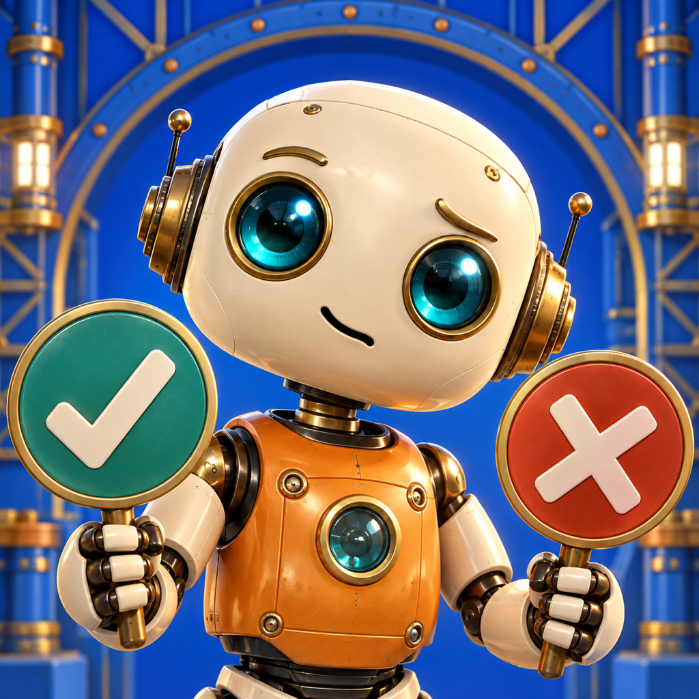

Support · Beta testing
The Confused Robot
Explore a 3D factory through true-or-false questions, learn from each explanation, and clear the robot's path.
Adults only. Personal TestFlight invitations follow manual review and approval; registration does not guarantee a place in a testing round.
Learn, discover, and keep moving
A curiosity game for children: answer questions, read or hear a short explanation, and travel between factory wings. Available for testing on iPhone, iPad, and Apple TV.
Purchases and restoration
The first two worlds are free. Available upgrades and localized prices appear in the installed version's purchase screen. When available, the all-app bundle subscription is a separate choice from the individual app plan. Existing permanent Robot purchases remain supported.
Use the same Apple Account and choose Restore Purchases to restore this app's purchase. To share a bundle subscription, also sign in to the same shared parent account in each supported app. An individual purchase does not unlock other games.
Testing with TestFlight
Purchases made in a TestFlight build are test transactions without a charge. Check that Apple's confirmation identifies the testing environment. The bundle may be unavailable in early builds; do not purchase separately in every game to try to activate it.
Feedback and support
Send the build number, device model, system version, and a short description. Gameplay recordings are welcome without children's personal information. Never send passwords, keys, or payment details.
{{SUPPORT_EMAIL}}